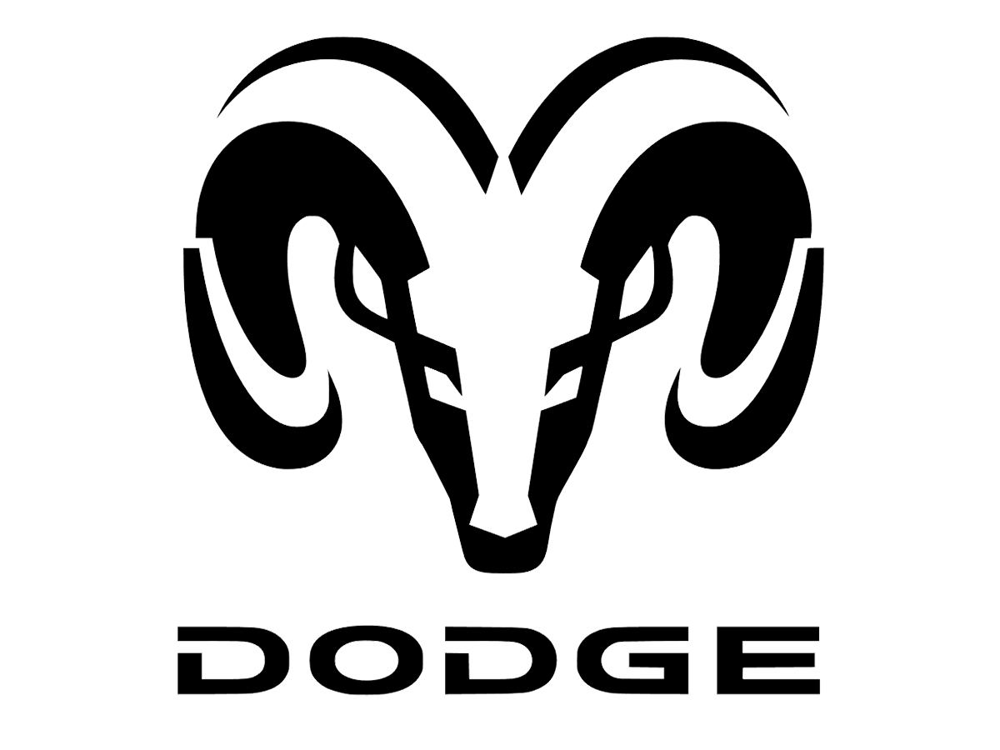

О DODGE
Подразделение американской автомобильной компании Chrysler, которое занимается выпуском пикапов, легковых авто и внедорожников. Основана фирма была братьями Джоном и Горацием Доджами в 1914 году. Изначально компания занималась производством комплектующих и сотрудничала в основном с заводами Форда. Это сотрудничество позволило перенять молодой фирме технологию стандартизации и поточной сборки, характерную для заводов Форда. Подобный опыт пригодился начинающей компании Dodge и дал толчок к дальнейшему развитию. Начиная с 1928 года концерн Dodge входит в состав Chrysler. В Россию на автомобильный рынок компания поставляет такие модели как седан Avenger, хэтчбек Caliber, минивэн Journey, внедорожник Nitrо. Штаб-квартира компании располагается в пригороде Детройта, в Хайленд-Парке.

Основная информация
Категория бренда: американские автомобили
Год основания: 1900
Основатели: братья Додж
Количество моделей: 9
Принадлежит:Fiat-Chrysler LLC
Год основания: 1900
Основатели: братья Додж
Количество моделей: 9
Принадлежит:Fiat-Chrysler LLC